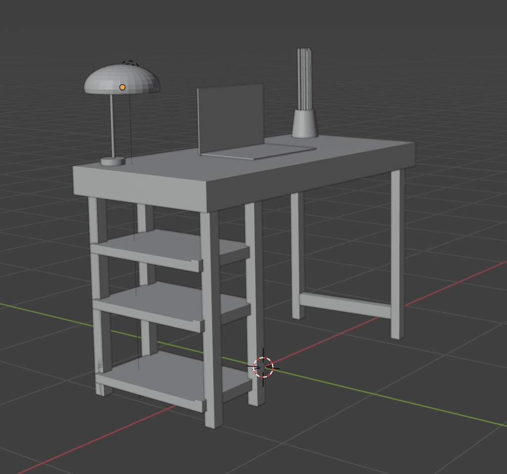
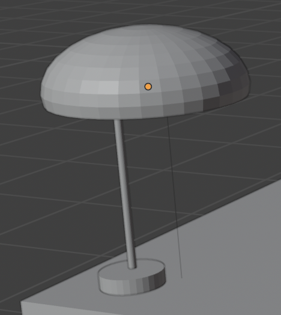
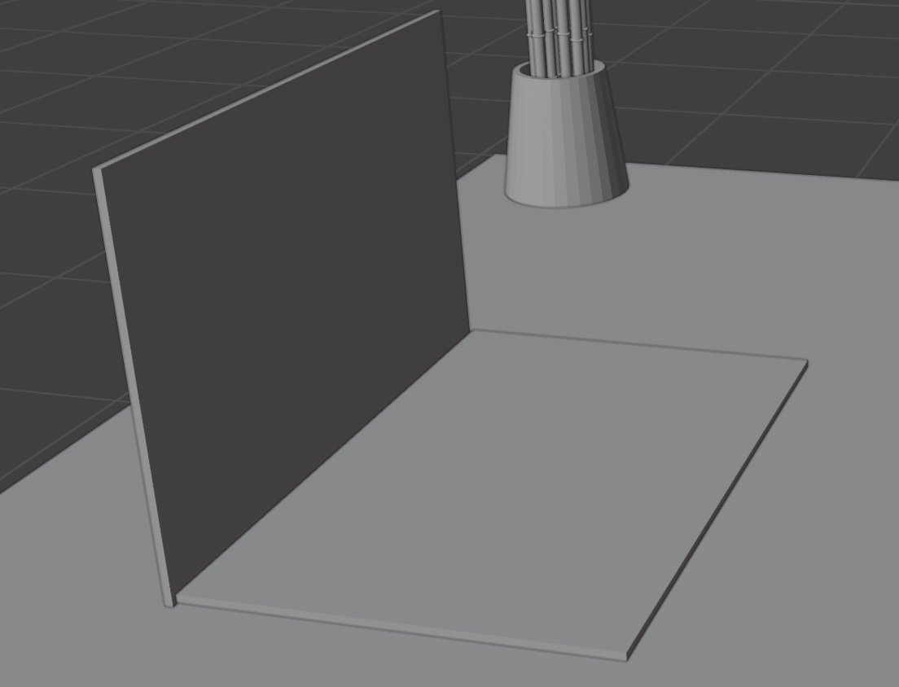
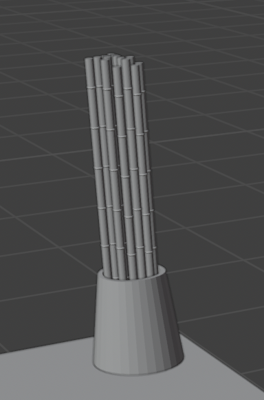
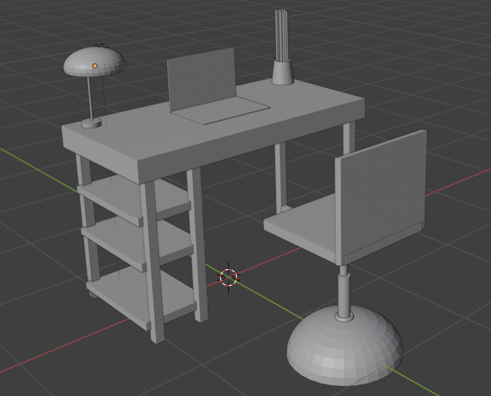

I started creating my scene by imagining the context in which users would interact with my redesigned Canvas desktop dashboard. The end users are mostly undergraduate and graduate students, so I decided to build a student room setting — a simple, functional workspace with a table, chair, desk lamp, bamboo plant (in progress), and a laptop (in progress). This is the environment where students would use the desktop version of Canvas.
The first object I created was the desk. I used the Mirror Modifier for the legs to make the modeling process faster and keep the proportions symmetrical. The desk has a simple, boxy shape to reflect a realistic student table, with shelves modeled as scaled cubes under one side for structure and visual interest.
Next, I created a desk lamp using a few simple primitives. I started with a cylinder for the base, another cylinder for the stem, and a UV sphere for the head of the lamp. I deleted the bottom faces of the sphere to make it a half dome and positioned it to face downward. Finally, I added a light source inside the dome to simulate illumination.
The laptop is still in progress. For now, I modeled the base and screen using cubes, keeping the proportions realistic. The next step is to angle the screen slightly backward and later texture it with the redesigned Canvas dashboard interface.
To personalize the space, I decided to add a bamboo plant, inspired by my own workspace. The pot was made using a cylinder with the top face inset and extruded inward to hollow it out. For the bamboo stalks, I added several thin cylinders and plan to add leaves later using planes shaped and bent to resemble natural leaves.
I began modeling a chair to complete the scene. For now, I’ve created a basic seat, legs, and a rectangular backrest. I’m still experimenting with the proportions and design before finalizing it.
Overall, this week’s focus was on blocking out the main elements of the environment and using simple modeling techniques like scaling, extrusion, and mirroring. In the next step, I’ll refine proportions, add smaller details, and start texturing and lighting for a more realistic look.